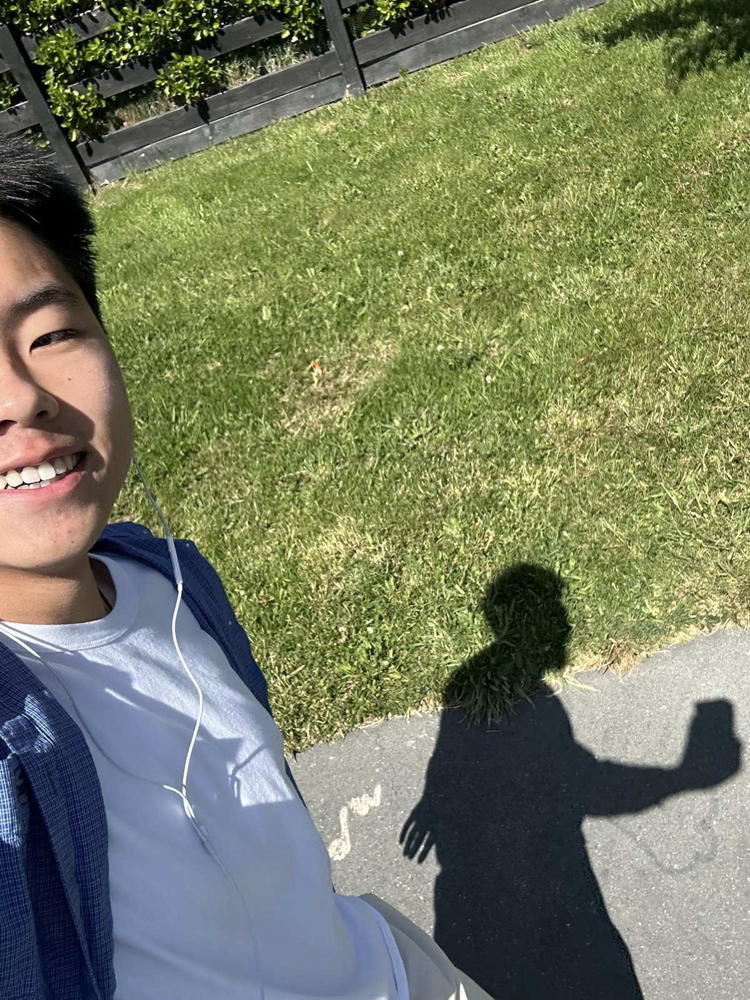

My First Term at Lincoln High School
Written on: 03/11/2026
I’m a Year 10 student at Lincoln High School in New Zealand. I joined in July 2026, a long way from home in Xi’an. This is a short reflection on my first term here: what was hard, how I got through it, and what it changed in me.
I can’t change the environment, but I can change myself.

The hardest part: changing myself
I realised that I can’t change my environment. If I want to fit in and live happily in a new place, I have to keep changing myself and find my own way of living there.
That process is painful. At first I didn’t fit in, and I missed my old life. But reality quickly pushed those feelings aside. I had to accept the new environment, and little by little, without my even noticing, it changed me.
How I got through it
My sister, my brother and my friends kept encouraging me. I also realised that things were never as hard as they seemed.
When I first faced a difficulty, I thought about it too much and didn’t act. I stayed where I was and felt the problem was taking forever to solve, when really I hadn’t started. So I kept going, one step at a time. Once I got through it, it felt great.
What I gained
This experience brought out a side of me I never knew I had, almost the opposite of who I was before. I see it as real personal growth, and I’m grateful for it.